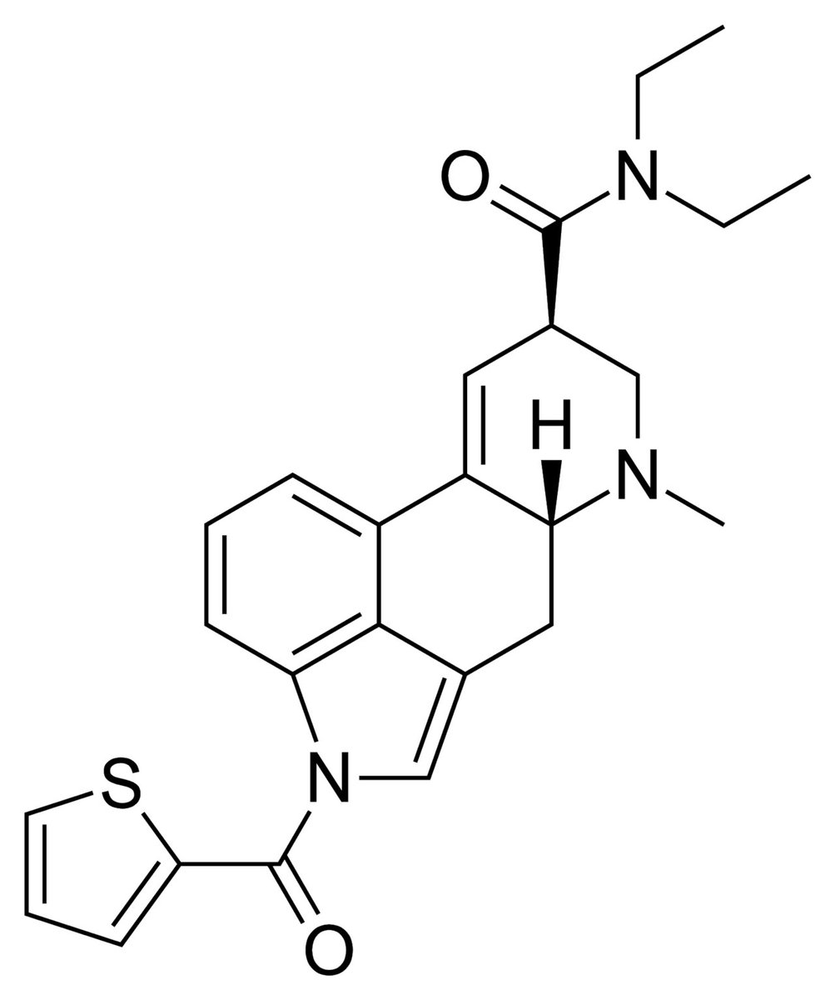

鼠尾草～🌿
@SalviaSWC
@Minokakay 在中国不合法的
我国法律规定凡是某种管制精神物质的酯或酰胺都同属精神管制物质，1T-LSD属于LSD的1N-(噻吩-2)基甲酰胺，其管制级别与LSD等同

Minokakay（泰补色诺
@Minokakay
1T-LSD 中国大陆合法 荷兰合法
荷兰带回，摄于Bangkok家中
基本吊打全中推售卖的所有策划药
不要问卖不卖，问我卖不卖的我直接通知警察上门调查，想吃就去办荷兰签证。 https://t.co/rqJ0i8M5Uz